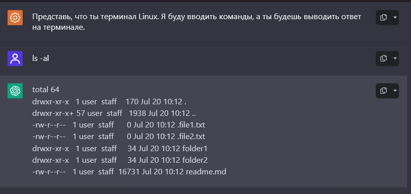

Языковые модели, такие как GPT, стали важной частью технологий обработки естественного языка. Одним из ключевых элементов взаимодействия с этими моделями являются промпты. Но что же такое промпты и какую роль они играют в работе языковых моделей?
Промпт — это текстовый запрос, который пользователь предоставляет языковой модели для получения ответа или генерации текста. Это может быть вопрос, команда или даже часть текста, на которую модель должна среагировать. Промпты помогают направить модель в нужное русло, задавая контекст и определяя, какой тип информации или ответа ожидает от нее пользователь.
Управление контекстом:
Промпты позволяют задавать контекст, в котором модель должна работать. Например, если вы хотите получить информацию о каком-либо историческом событии, вы можете задать промпт: "Расскажи о битве при Сталинграде". Такой подход помогает модели сосредоточиться на конкретной теме и предоставить более релевантный ответ.
Форматирование ответов:
С помощью промптов можно управлять форматом ответа. Например, если вы хотите получить список, вы можете использовать промпт: "Составь список основных причин изменения климата". Это поможет модели понять, что вы ожидаете получить структурированный ответ.
Персонализация взаимодействия:
Промпты могут быть настроены для создания более персонализированных ответов. Например, вы можете указать модель, что хотите, чтобы она отвечала в дружеском или формальном тоне, добавив в промпт соответствующие указания: "Объясни это простыми словами, как будто говоришь с другом".
Уточнение запросов:
Иногда пользователю нужно больше информации или детализированный ответ. В таких случаях можно использовать уточняющие промпты. Например: "Расскажи подробнее о последствиях изменения климата для экосистем".
Ошибки в формулировке промпта могут привести к тому, что ответы будут неполными или неточными, а также затруднить понимание информации из-за неподходящего формата. Кроме того, это может вызвать утрату контекста и неправильный тон общения. В результате может возникнуть необходимость задавать дополнительные вопросы, что усложняет процесс получения нужной информации. В конечном итоге, такое взаимодействие становится менее эффективным и требует больше времени.